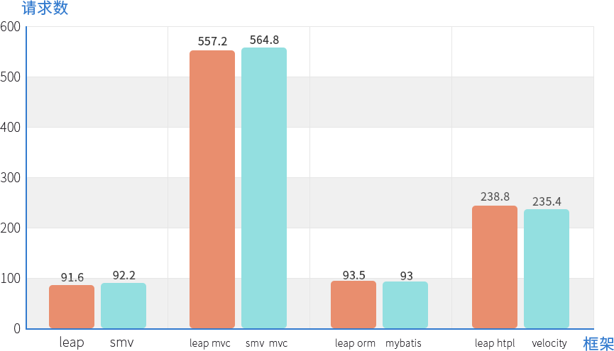

欢迎来到leap的世界
leap是一个全栈式的web应用开发框架,高效便捷,上手简单,功能强大.
简单的依赖配置
在一个新的maven工程中,只需要添加如下依赖:
就会添加所有的依赖包,各个模块间的依赖和优化已经全部配置好了,添加即用.
<dependency> <groupId>org.leapframework</groupId> <artifactId>leap-fw</artifactId> <version>${leap.version}</version> <type>pom</type> </dependency>
优秀的运行性能
在目前主流的开发框架中,spring mvc + mybatis + velocity (smv)是性能相当优秀的开发组合, 我们已经对比过leap和smv的全栈性能和各个模块单独的性能,对比结果如下: 
便捷的安全配置
登录校验,CSRF校验等安全校验功能,只需要一行代码便可启用和关闭,便捷轻松.
- 内置支持CSRF校验,一行代码启用CSRF校验
- 内置登录校验,一行代码启用登录校验,轻松实现用户身份认证
- 内置HTML5 CORS标准支持,简单注解实现跨域资源共享
- 模板引擎自动防XSS攻击,可以更加专注于业务逻辑
良好的开发体验
leap是全栈统一风格设计,基于html注释的模板引擎,基于ActiveRecord的ORM框架,高度智能的参数绑定,遵从约定大于配置的原则,代码简洁,使用轻松.
- 模板语法简单,提高开发效率;静态资源自动标识版本,不用再与客户端缓存做斗争
- mvc智能简单的参数绑定,遵循约定大于配置的原则,代码简洁,极少冗余注解
- 基于ActiveRecord的ORM框架,零sql完成绝大多数数据操作
- 智能控制反转和依赖注入,无需关注对象生命周期
- 框架内置语言包,大量工具类使用随心所欲